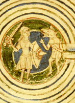

 |
I wanted to explain how the rules for these mazes came about, but I’ll begin with a digression about video games. I played them a lot in the 1970s and 80s, and back then they were fairly abstract and generally pretty clever. That was before the great advances in computer technology that happened in the 90s. These advances enabled the game companies to add more realism to their games, and the more realism they added, the dumber the games became. That happens in many art forms. Usually the more realism you have, the worse your content becomes. Anyway . . . a favorite game of mine from that era was Berserk, the game with the robot voice that says “The humanoid must not escape!” In Berserk you are represented by a small figure that you guide through various mazy boards. There are also robots that move towards you and shoot at you. These robots are somewhat predictable, as are monsters in most video games. The robots will make certain moves in response to the moves you make. Knowing what they will do is some help to you when you play Berserk. But Berserk is primarily a game of manual dexterity. It’s impossible to think very far ahead. So then I thought: Wouldn’t it be great to have a game in which you fight a robot, but instead of needing quick responses, you could take all the time you wanted to plan your moves. This is the thinking that eventually led to the rules for the Theseus mazes. It’s like I took a frenzied video game and slowed it down to one thousandth of its normal speed.
I was able to use this idea in 1989 when I was creating mazes for my book Mad Mazes. After I got the rules for the maze in a final form, it took me a long time—
I saw a similarity between the maze and the ancient myth of Theseus and the Minotaur, so I wrote a story that updated the myth and also provided an explanation of the rules to the maze. My story went on for ten pages and I thought it was great. My publisher, Bob Adams, then told me it was too long, it was boring, and no one would want to read the whole thing. So I wrote just a single-
Most authors feel that editors and publishers are ruining their work, so I asked my friends to read my original story. Most of them also said it was too long, it was boring, and they didn’t want to read the whole thing. But a couple of friends actually liked it and I myself still thought it was great. I think I like anything that takes an ancient myth and puts it in a modern setting. That’s why I’m such a sucker for Buffy, the Vampire Slayer. After Mad Mazes appeared, I had the Theseus maze, along with my long story, published in the British magazine Games & Puzzles. I’ve included that article at this location.
In October, 1998, I started my web site, which was then just free home pages on AT&T Worldnet. I got Oriel Maximé to create an interactive Java version of the Theseus maze for my web site. Oriel also created a Java version of my Sliding Door Maze.
Oriel’s programs worked very well and were fun to play. They also showed that most of my mazes worked best as interactive programs. In fact, it now seems ludicrous that I once asked people to run these mazes with only pointers and a printed page. These programs were very popular and there was even some discussion on the Internet about how to solve the Theseus maze. Deja News had a long thread of correspondence about it. | ||
The program uses a process of evolution. It works something like this: The program takes a random maze, and by playing it through, calculates its difficulty. Of course, it won’t be very difficult to start with. But the program then “mutates” the maze by adding or removing a wall or two, and calculates the new difficulty for lots of different possible mutations. With any luck, at least one of these mutations will be a little bit more difficult than the first maze. The program then repeats the process using the best mutation as a starting point to find further (slightly more difficult) mutations, and so on. | |||
I made this comment: | |||
Because your mazes have lots of false paths, I guess your program knew to define “difficulty” as the length of the true path PLUS the length of the false paths. A lot of people have the mistaken notion that the length of the true path is all that matters. | |||
And Toby replied: | |||
That’s exactly the mistake I made at the beginning! I found a 6x6 maze that took something like 92 moves to solve - but it was very dull to play! So I switched to counting the true and false paths and got good results. I tried other, more complicated measures - like favoring long paths rather than small ones - and not counting moves you made when the minotaur was trapped - but in the end I found the best results were from just adding up all paths. | |||
I also asked whether human judgement was involved at any part of the process, and he replied: | |||
The only human step is to play the absolute final maze and decide whether it’s good enough for inclusion in the applet. This is an important step though - I was able to reject quite a few boring mazes this way, so you are right to think that human judgement has played its part. | |||
I find this all to be pretty fascinating.
Recent News—November, 2003:
Michael Madden is using the Theseus mazes in experiments with Artificial Intelligence at the National University of Ireland. He has a program that can solve one problem, learns something general from that problem, then have improved performance when it attacks a similar problem. The Theseus mazes provide a set of similar problems and they range from moderate to difficult. If you’re interested in this, you can download Madden’s paper on the subject (it’s an Acrobat download). Go to this page then click on this title: “Experiments with Reinforcement Learning in Environments with Progressive Difficulty.”
| |||
{kind=link}